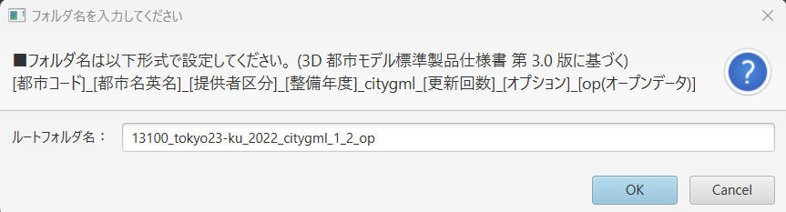

データセットのエクスポート
本ツールで編集した3D都市モデルは、CityGML形式のデータセットとして以下の手順で書き出せます。エクスポート後は、他のGISソフトウェアや3Dビューアなどで再利用・配布が可能です。
1. 書き出し手順
- トップ画面で「書き出し」ボタンをクリック
 - データセットのフォルダ名を入力
- 出力フォルダの選択 → 「開く」ボタンを押下

2. エクスポート結果のフォルダ構成
エクスポートが完了すると、指定したフォルダ内に以下のフォルダ群が生成されます。
- codelists
- metadata
- schemas
- specification
元のデータセットに含まれるファイルがそのまま引き継がれます。 - udx
実際に編集されたCityGMLファイルと、それに紐づくテクスチャ画像等が含まれます。